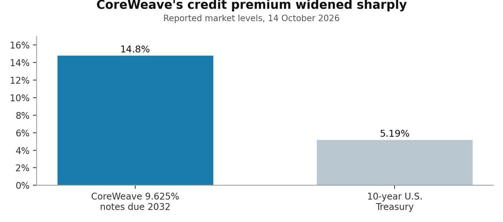
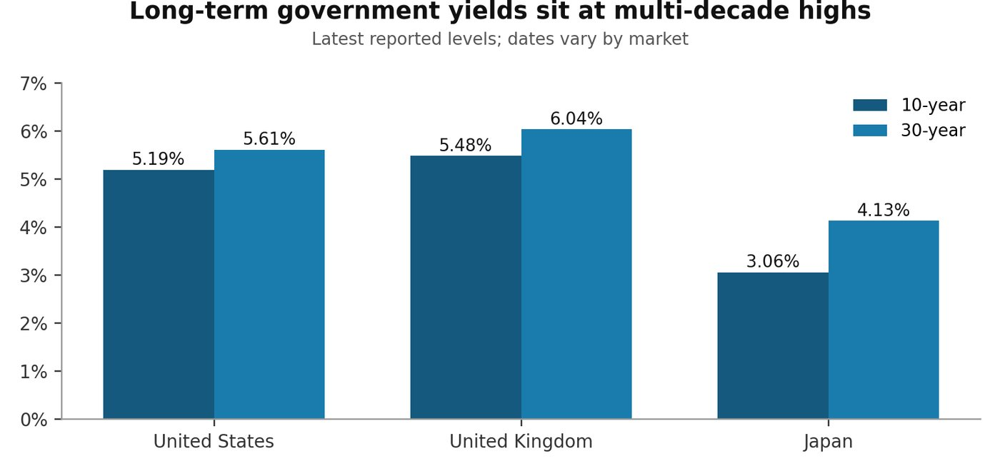
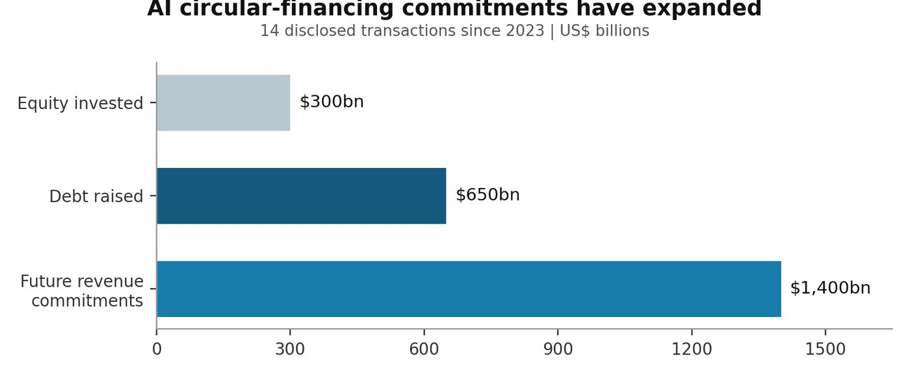

CoreWeave's distressed bond pricing leaves open whether the AI investment cycle is collapsing. What it shows clearly is that lenders want evidence that contracted demand can become durable cash flow before financing costs overwhelm weaker balance sheets.

The credit signal
The bond market rarely shouts. This week, it did not need to.
On 11 June, CoreWeave announced $1.25 billion of 9.625% senior unsecured notes due in July 2032, issued at par. [1] On 14 October, their yield to maturity stood at 14.8%, after touching 15% a day earlier. CoreWeave shares fell 15.5% as investors reassessed the cost of financing the AI infrastructure buildout. [2]
The repricing measures the return lenders now require to hold unsecured exposure, which is a narrower claim than a forecast of default. The 10-year U.S. Treasury yield was 5.19% on 14 October, leaving a yield gap of roughly 9.6 percentage points. [3] When the risk-free benchmark rises, every leveraged data-centre project must clear a higher financial hurdle.


Rates reset the economics
The immediate catalyst was a stronger-than-expected U.S. inflation report. Headline consumer prices rose 0.6% in September and 3.7% over the preceding 12 months. Core prices, excluding food and energy, rose 0.3% for the month and 2.6% year over year. [4]
The Federal Reserve had already raised its target range by 25 basis points in September, to 3.75%–4.00%. [5] After the inflation report, traders priced roughly even odds of another increase at the 27–28 October meeting, up from about one in five, according to CME Group data cited by Reuters. [14] The result is double pressure on AI infrastructure: more expensive debt service and higher discount rates for profits expected far into the future.
Government-bond prices have fallen as yields have risen. What has increased is the cost of capital, and private borrowers must now compete with governments offering historically attractive nominal yields.
A global repricing
The pressure extends well beyond Washington. A global selloff on 7 October pushed Britain's 30-year gilt yield above 6%, its highest since 1998, three weeks before the chancellor's first budget. The same move took U.S. long-term borrowing costs to their highest since 2002. [11]
In Japan, which spent three decades fighting deflation, the 10-year yield rose above 3% in September for the first time since 1996. [12]
Several forces sit behind the move. Oil has traded above $100 a barrel. [11] U.S. federal debt passed $40 trillion in August, Britain's debt stands near 95% of GDP and Japan's exceeds 200%. [13] Investors are demanding more compensation to lend for long periods while the path of inflation and deficits remains uncertain. [13]


The balance-sheet tension
CoreWeave illustrates both sides of the AI credit debate. The company reported a revenue backlog of approximately $104 billion at 30 June. Second-quarter revenue reached $2.575 billion, compared with $1.212 billion a year earlier. [6] These figures support the case that scarce computing capacity still has customers.
The funding burden is equally visible. CoreWeave reported $72.046 billion in total liabilities, a figure that includes lease obligations as well as debt, and a quarterly net loss of $626 million. Net interest expense rose to $640 million from $267 million a year earlier. [6][7] Its 2032 unsecured notes do not face imminent maturity, but the company must keep financing a capital-intensive expansion while demonstrating that backlog converts into cash flow on acceptable terms.
A large backlog improves revenue visibility, but it does not automatically resolve construction costs, customer concentration, contract timing, capacity delivery or refinancing needs elsewhere in the capital structure.
A wider transmission channel
The International Monetary Fund has identified an AI-related market correction as one of three risks that could tighten global financial conditions, alongside a sharper rise in sovereign yields and cyberattacks. The fund's concern extends beyond high valuations to how leverage and contractual links could transmit disappointment across the AI ecosystem. [8][9]
Borrowing is a growing part of that picture. Hyperscalers, the largest cloud and data-centre operators, now account for about 10% of global investment-grade bond issuance, up from less than 1% in 2024. [15] That puts them in direct competition with governments for the same pool of bond investors.
In a review of 14 publicly disclosed circular-financing transactions since 2023, the IMF identified roughly $300 billion of equity investment and $650 billion of debt associated with $1.4 trillion in future revenue commitments. [8][9] These figures measure different concepts and should not be added together. They show how the same network can provide capital, issue debt, buy chips and cloud services, and depend on the resulting revenue.


If AI services monetize more slowly than expected, the same shock could lower equity values, weaken debt-service capacity and reduce future revenue embedded in supply and cloud contracts. Contagion would still require a trigger. Concentrated, interconnected exposures nonetheless deserve more scrutiny than company-by-company balance sheets alone can provide.
Banks see opportunity and risk
Large banks are financing the buildout while adopting AI internally. Goldman Sachs chief executive David Solomon emphasized uncertainty over how demand for capital and computing power will evolve. Wells Fargo chief executive Charlie Scharf pointed to leverage supporting the investment cycle, while Morgan Stanley chief financial officer Sharon Yeshaya highlighted the danger of competitors loosening credit standards. Morgan Stanley chief executive Ted Pick described the bank's role in AI financing as "existential." [10]
There is also a countercase. Citigroup chief executive Jane Fraser said computing capacity remains insufficient and reported faster product development from AI deployment. Dave Ellison, a portfolio manager at Hennessy Funds, told Reuters that banks often act as arrangers, distributing loans to investors rather than retaining all the exposure. [10] Distribution can reduce a bank's direct balance-sheet concentration. The underlying market risk then sits with the investors who bought the loans.
The payoff from internal use remains hard to see. JPMorgan Chase chief financial officer Jeremy Barnum said AI's benefits are not yet visible in quarterly results. Brian Mulberry, chief market strategist at Zacks Investment Management, warned that investors will start questioning the hype if productivity gains have not arrived by the end of next year. [10]
What would confirm the warning?
High yields alone do not establish that AI is a bubble. The strongest borrowers retain profitable core businesses, and CoreWeave's backlog suggests that demand has not disappeared. The more useful test is whether operating cash generation catches up with the cost of supplying that demand.
The first signal is backlog conversion: whether contracted commitments become recognized revenue and cash within the expected timetable. The second is funding discipline, which means comparing capital expenditure, new borrowing and interest expense with operating and free cash flow. Credit-market access matters as much as share prices, so bond prices, credit spreads, collateral requirements and the terms of new debt deserve close attention.
Concentration is the fourth test: how far borrowers depend on a small number of customers, chip suppliers, cloud partners and financing providers. The last is AI monetization itself, measured by realized productivity gains and durable customer economics, which capacity demand and management forecasts cannot demonstrate on their own.
The calendar will supply early evidence. The Federal Reserve meets on 27–28 October, and Britain's chancellor presents the budget on 28 October. [14][11] Hyperscalers' capital-spending guidance may matter most: Investment House described any downward revision as the most direct pressure point in the IMF's analysis. [15]
The base case remains that profitable technology companies can absorb a meaningful investment cycle. The risk case emerges if weaker borrowers must refinance at distressed rates before utilization and cash flow mature, or if reduced infrastructure spending breaks the circular chain of expected revenues.
The bond market has withdrawn one assumption from the AI boom: that growth alone will make every financing structure work.
References
- CoreWeave, "CoreWeave Announces Pricing of $1.25 Billion of Senior Notes and €2 Billion of Senior Notes," 11 June 2026. https://investors.coreweave.com/news/news-details/2026/CoreWeave-Announces-Pricing-of-1-25-Billion-of-Senior-Notes-and-2-Billion-of-Senior-Notes/default.aspx
- CNBC, "CoreWeave shares tumble as bond yields near 15% on concern about AI borrowing binge," 14 October 2026. https://www.cnbc.com/2026/10/14/coreweave-stock-bond-yields-ai-debt.html
- The Wall Street Journal, "U.S. Treasury Bonds," market data for 14 October 2026. https://www.wsj.com/market-data/bonds/treasuries
- U.S. Bureau of Labor Statistics, "Consumer Price Index: September 2026," 14 October 2026. https://www.bls.gov/news.release/archives/cpi_10142026.htm
- Board of Governors of the Federal Reserve System, "Federal Reserve issues FOMC statement," 16 September 2026. https://www.federalreserve.gov/newsevents/pressreleases/monetary20260916a.htm
- CoreWeave, "CoreWeave Reports Strong Second Quarter 2026 Results," 11 August 2026. https://investors.coreweave.com/news/news-details/2026/CoreWeave-Reports-Strong-Second-Quarter-2026-Results/default.aspx
- CoreWeave, Form 10-Q for the quarter ended 30 June 2026, filed 12 August 2026, U.S. Securities and Exchange Commission. https://www.sec.gov/Archives/edgar/data/1769628/000176962826000366/crwv-20260630.htm
- Athanasios Vamvakidis and Jason Wu, "Global Financial Markets Face Rising Risks From AI, Bond Yields, and Cyberattacks," IMF Blog, 13 October 2026. https://www.imf.org/en/blogs/articles/2026/10/12/global-financial-markets-face-rising-risks-from-ai-bond-yields-and-cyberattacks
- International Monetary Fund, "Press Briefing Transcript: Global Financial Stability Report, Annual Meetings 2026," 13 October 2026. https://www.imf.org/en/news/articles/2026/10/13/tr-101326-press-briefing-transcript-global-financial-stability-report-annual-meetings-2026
- Manya Saini, Saeed Azhar and Tatiana Bautzer, "As Wall Street banks finance and adopt AI, risks mount on both fronts," Reuters, 14 October 2026. https://www.reuters.com/legal/legalindustry/wall-street-banks-finance-adopt-ai-risks-mount-both-fronts-2026-10-14/
- Reuters, "UK 30-year gilt yields hit 28-year high in global selloff," 7 October 2026. https://money.usnews.com/investing/news/articles/2026-10-07/uk-30-year-gilt-yields-hit-28-year-high-in-global-selloff
- CNBC, "Historic day for global bonds as 10-year Treasury and JGB yields hit highest in decades," 24 September 2026. https://www.cnbc.com/2026/09/24/japan-jgb-bond-yield-treasurys.html
- EBC Financial Group, "US 4.8%, UK 5.25%, Japan 3%: What Is Driving the Global Bond Selloff?" September 2026. https://www.ebc.com/forex/global-bond-selloff-us-uk-japan-yields
- Reuters, "Inflation heats up in September; Fed rate hike this month back on table," 14 October 2026. https://www.ksl.com/article/51636254/consumer-prices-accelerate-in-september-on-costlier-gasoline-core-cpi-firmer
- Investment House, "The IMF Says Private Credit Is Big Enough to Break Things," 14 October 2026. https://www.investmenthouse.com/2026/10/14/the-imf-says-private-credit-is-big-enough-to-break-things/
- CNBC, "10-year Treasury yield jumps as September core inflation comes in hotter than expected," 14 October 2026. https://www.cnbc.com/amp/2026/10/14/us-treasury-yields-cpi-inflation-report.html
- Image. Brett Sayles, "Server Racks on Data Center," Pexels, free stock photograph. https://www.pexels.com/photo/server-racks-on-data-center-4508751/